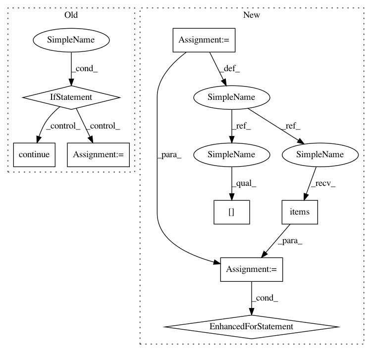

24d3cbdfe9f16fbf903259c2fb1870907cd5f9f5,homeassistant/components/switch/orvibo.py,,setup_platform,#Any#Any#Any#Any#,17
Before Change
switch_conf = config.get("switches", [config])
for switch in switch_conf:
if switch.get("host") is None:
_LOGGER.error("Missing required variable: host")
continue
host = switch.get("host")
mac = switch.get("mac")
try:
switches.append(S20Switch(switch.get("name", DEFAULT_NAME),
S20(host, mac=mac)))
_LOGGER.info("Initialized S20 at %s", host)
After Change
Find and return S20 switches.
from orvibo.s20 import discover, S20, S20Exception
switch_data = {}
switches = []
switch_conf = config.get(CONF_SWITCHES, [config])
if config.get(CONF_DISCOVERY):
_LOGGER.info("Discovering S20 switches ...")
switch_data.update(discover())
for switch in switch_conf:
switch_data[switch.get(CONF_HOST)] = switch
for host, data in switch_data.items():
try:
switches.append(S20Switch(data.get(CONF_NAME, DEFAULT_NAME),
S20(host, mac=data.get(CONF_MAC))))
_LOGGER.info("Initialized S20 at %s", host)
except S20Exception:
_LOGGER.error("S20 at %s couldn"t be initialized", host)
add_devices_callback(switches)
class S20Switch(SwitchDevice):
In pattern: SUPERPATTERN
Frequency: 3
Non-data size: 8
Instances
Project Name: home-assistant/home-assistant
Commit Name: 24d3cbdfe9f16fbf903259c2fb1870907cd5f9f5
Time: 2016-09-01
Author: happyleaves.tfr@gmail.com
File Name: homeassistant/components/switch/orvibo.py
Class Name:
Method Name: setup_platform
Project Name: mynlp/ccg2lambda
Commit Name: 5b5d9a9aedf8e11b9609d28b26b6488bc20cb08b
Time: 2017-03-24
Author: pascual@nii.ac.jp
File Name: scripts/semantic_types.py
Class Name:
Method Name: merge_dynamic_libraries
Project Name: jaakkopasanen/AutoEq
Commit Name: e6f1028be471f2ba7fdf877abf7f8f9d05b8c4ce
Time: 2018-08-06
Author: jaakko.o.pasanen@gmail.com
File Name: results/recommendations.py
Class Name:
Method Name: get_urls